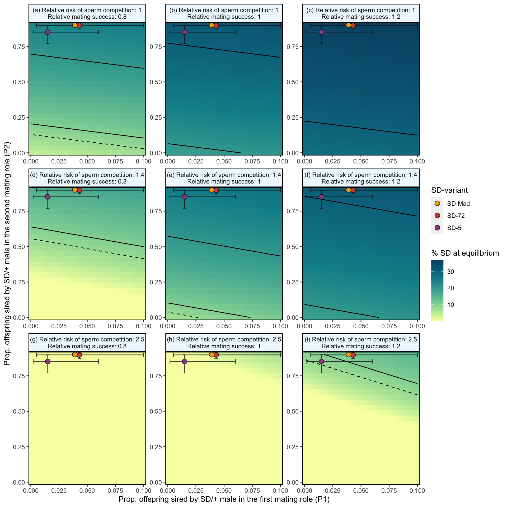

Sexual selection and the population genetics of a selfish gene
Population genetic model
Thomas Keaney, Theresa Jones and Luke Holman
Last updated: 2021-08-07
Checks: 7 0
Knit directory: SD_sexual_selection/
This reproducible R Markdown analysis was created with workflowr (version 1.6.2). The Checks tab describes the reproducibility checks that were applied when the results were created. The Past versions tab lists the development history.
Great! Since the R Markdown file has been committed to the Git repository, you know the exact version of the code that produced these results.
Great job! The global environment was empty. Objects defined in the global environment can affect the analysis in your R Markdown file in unknown ways. For reproduciblity it’s best to always run the code in an empty environment.
The command set.seed(20200925) was run prior to running the code in the R Markdown file. Setting a seed ensures that any results that rely on randomness, e.g. subsampling or permutations, are reproducible.
Great job! Recording the operating system, R version, and package versions is critical for reproducibility.
Nice! There were no cached chunks for this analysis, so you can be confident that you successfully produced the results during this run.
Great job! Using relative paths to the files within your workflowr project makes it easier to run your code on other machines.
Great! You are using Git for version control. Tracking code development and connecting the code version to the results is critical for reproducibility.
The results in this page were generated with repository version 94fc320. See the Past versions tab to see a history of the changes made to the R Markdown and HTML files.
Note that you need to be careful to ensure that all relevant files for the analysis have been committed to Git prior to generating the results (you can use wflow_publish or wflow_git_commit). workflowr only checks the R Markdown file, but you know if there are other scripts or data files that it depends on. Below is the status of the Git repository when the results were generated:
Ignored files:
Ignored: .DS_Store
Ignored: .Rapp.history
Ignored: .Rhistory
Ignored: .Rproj.user/
Ignored: analysis/.DS_Store
Ignored: analysis/.Rapp.history
Ignored: simulation_results/.DS_Store
Unstaged changes:
Modified: Supplementary_material.Rmd
Modified: Supplementary_material.pdf
Modified: analysis/Supp_methods.Rmd
Modified: simulation_results/output.rds
Modified: simulation_results/output1.rds
Modified: simulation_results/output10.rds
Modified: simulation_results/output11.rds
Modified: simulation_results/output12.rds
Modified: simulation_results/output13.rds
Modified: simulation_results/output14.rds
Modified: simulation_results/output15.rds
Modified: simulation_results/output16.rds
Modified: simulation_results/output17.rds
Modified: simulation_results/output18.rds
Modified: simulation_results/output19.rds
Modified: simulation_results/output2.rds
Modified: simulation_results/output20.rds
Modified: simulation_results/output21.rds
Modified: simulation_results/output22.rds
Modified: simulation_results/output23.rds
Modified: simulation_results/output24.rds
Modified: simulation_results/output25.rds
Modified: simulation_results/output26.rds
Modified: simulation_results/output27.rds
Modified: simulation_results/output28.rds
Modified: simulation_results/output29.rds
Modified: simulation_results/output3.rds
Modified: simulation_results/output30.rds
Modified: simulation_results/output31.rds
Modified: simulation_results/output32.rds
Modified: simulation_results/output33.rds
Modified: simulation_results/output4.rds
Modified: simulation_results/output5.rds
Modified: simulation_results/output6.rds
Modified: simulation_results/output7.rds
Modified: simulation_results/output8.rds
Modified: simulation_results/output9.rds
Note that any generated files, e.g. HTML, png, CSS, etc., are not included in this status report because it is ok for generated content to have uncommitted changes.
These are the previous versions of the repository in which changes were made to the R Markdown (analysis/Population_genetic_model.Rmd) and HTML (docs/Population_genetic_model.html) files. If you’ve configured a remote Git repository (see ?wflow_git_remote), click on the hyperlinks in the table below to view the files as they were in that past version.
| File | Version | Author | Date | Message |
|---|---|---|---|---|
| Rmd | 94fc320 | tkeaney | 2021-08-07 | fixes in response to reviewer comments |
| html | e16caf9 | tkeaney | 2021-06-02 | Build site. |
| Rmd | 51d8aee | tkeaney | 2021-06-02 | more final touches |
| html | 9a9d650 | tkeaney | 2021-06-02 | Build site. |
| html | fd7b478 | tkeaney | 2021-05-26 | Build site. |
| Rmd | 2faa816 | tkeaney | 2021-05-26 | final touch pre submission |
| html | f30258a | tkeaney | 2021-05-25 | Build site. |
| Rmd | 877c09b | tkeaney | 2021-05-25 | final updates before submission |
| html | e28d4c6 | tkeaney | 2021-05-25 | Build site. |
| html | ddaa2d1 | tkeaney | 2021-05-24 | Build site. |
| Rmd | 3565002 | tkeaney | 2021-05-24 | Publish the initial files for myproject |
\(~\)
We shall refer to segregation distorting alleles as SD and non-distorting wildtype alleles as W throughout this analysis. This notation can be found in our code chunks and in the accompanying explanations. For example, we refer to an individual homozygous for the SD allele as SDSD, a heterozygous individual as WSD and an individual homozygous for the wildtype allele as WW.
Load packages
library(tidyverse) # for purrr, ggplot, dplyr and more
library(patchwork) # for combining plots
library(rcartocolor) # for cool colours
library(ggpubr) # for combining plots
library(kableExtra) # scrolling tables
library(pander) # other nice tables
library(stickylabeller) # for labelling ggplot facetsEnter empirical data from present study
\(~\)
In our empirical investigations, we have estimated the following parameters for the SD-5, SD-72 and SD-Mad alleles. We use these to parameterise our model, and to estimate the predicted equilibrium frequency for each SD allele, within the model’s parameter space (see Figure 2 and Figure S6)
kc values.
\(S_{precop}\), the mating success of SD/+ males (no measurements for SD-5).
\(P1_{cost}\) and \(P2_{cost}\) for WSD males*.
The probability of a female remating (albeit in very specific circumstances) after mating with a WSD male (\(p_{WSD}\)) or a WW male (\(p_{WW}\)).
*We did not measure the sperm competitive ability of SDSD homozygotes, because SD-5 and SD-72 are homozygous lethal. SD-Mad is homozygous viable, but a previous study (Wong and Holman, 2019) indicates that the fitness of SD-Mad homozygotes is very close to 0.
# k_c values
estimated_k_SD5 <- 0.944 # 94.4% of progeny inherit SD
estimated_k_SD72 <- 0.909 # 90.9% of progeny inherit SD
estimated_k_SDMAD <- 0.868 # 86.8% of progeny inherit SD
# The relative mating success for each SD variant
estimated_precop_SD5 <- NA # not measured
estimated_precop_SD72 <- 1.24
estimated_precop_SDMAD <- 1.19
# P1cost and P2cost values, plugged in from Table S7b and Table S8b
P1_SD5 <- 1 - 0.15
P2_SD5 <- 1 - 0.945
P1_SD72 <- 1 - 0.43
P2_SD72 <- 1 - 0.997
P1_SDMAD <- 1 - 0.39
P2_SDMAD <- 0 # no cost
# We also include 95% credible intervals for P1 and P2 cost, to use in Figure 2 and Figure S8
lower_P1_SD5 <- 1 - 0.02
lower_P2_SD5 <- 1 - 0.855
lower_P1_SD72 <- 1 - 0.05
lower_P2_SD72 <- 1 - 0.969
lower_P1_SDMAD <- NA #1 - 0.04 essentially identical to SD-72 so to avoid clutter in our figures we don't include this value
lower_P2_SDMAD <- 0 # no cost
upper_P1_SD5 <- 1 - 0.6
upper_P2_SD5 <- 1 - 0.997
upper_P1_SD72 <- 0 # no cost
upper_P2_SD72 <- 0 # no cost
upper_P1_SDMAD <- 0 # no cost
upper_P2_SDMAD <- 0 # no cost
# Remating probabilities from Table S9a, using estimates from Block 1
estimated_prob_remating_W = 0.304
estimated_prob_remating_SD5 = 0.755
estimated_prob_remating_SD72 = 0.425
estimated_prob_remating_SDMAD = 0.429
# Create a tibble containing empirical estimates
empirical_estimates <-
tibble(SD = c("SD-5", "SD-72", "SD-MAD"),
kc = c(estimated_k_SD5, estimated_k_SD72, estimated_k_SDMAD),
Precop = c(estimated_precop_SD5, estimated_precop_SD72, estimated_precop_SDMAD),
P1cost = c(P1_SD5, P1_SD72, P1_SDMAD),
lower_P1cost = c(lower_P1_SD5, lower_P1_SD72, lower_P1_SDMAD),
upper_P1cost = c(upper_P1_SD5, upper_P1_SD72, upper_P1_SDMAD),
P2cost = c(P2_SD5, P2_SD72, P2_SDMAD),
lower_P2cost = c(lower_P2_SD5, lower_P2_SD72, lower_P2_SDMAD),
upper_P2cost = c(upper_P2_SD5, upper_P2_SD72, upper_P2_SDMAD),
remating_prob = c(estimated_prob_remating_SD5, estimated_prob_remating_SD72, estimated_prob_remating_SDMAD))
pander(empirical_estimates, split.cell = 40, split.table = Inf)| SD | kc | Precop | P1cost | lower_P1cost | upper_P1cost | P2cost | lower_P2cost | upper_P2cost | remating_prob |
|---|---|---|---|---|---|---|---|---|---|
| SD-5 | 0.944 | NA | 0.85 | 0.98 | 0.4 | 0.055 | 0.145 | 0.003 | 0.755 |
| SD-72 | 0.909 | 1.24 | 0.57 | 0.95 | 0 | 0.003 | 0.031 | 0 | 0.425 |
| SD-MAD | 0.868 | 1.19 | 0.61 | NA | 0 | 0 | 0 | 0 | 0.429 |
\(~\)
Modelling segregation distortion and sperm competition costs
\(~\)
Here we describe how we found zygote frequencies when offspring were produced by individuals with different genotypes (WW, WSD or SDSD), considering both segregation distortion and sperm competition.
In our model we assume that SDSD individuals are homozygous lethal, as is the case with many SD variants (see modelling viability and precopulatory sexual selection). However, in the event that this assumption is relaxed, we assume that WW and SDSD homozygotes perform identically in sperm competition against themselves or each other. This is because it is assumed that the reduction in sperm number resulting from drive is the mechanism behind the loss in competitive ability, and drive is absent in viable SD homozygotes.
Parameter meanings:
\(P1_{normal}\) is the average P1 for the population, where \(0 \le P1_{normal} \le 1\).
\(P1_{cost}\) is a multiplicative cost to the proportion of offspring sired when the SD male mates first, where \(0 \le P1_{cost} \le 1\) (larger value = greater cost).
\(P2_{cost}\) is a multiplicative cost to the proportion of offspring sired when the SD male mates second, where \(0 \le P2_{cost} \le 1\) (larger value = greater cost).
For example, if we measured P1 for the SD/+ males as being 1/4 as high as for wildtype controls, we would set \(P1_{cost}\) = 0.75 to recapitulate nature in the model
\(k\) is the proportion of SD bearing sperm a female is inseminated with when mating with a SD/+ male.
\(~\)
Next we provide examples of how we calculated zygote frequencies for two of the potential mating combinations in our population. There are 36 possible mating combinations considered by our model and zygote frequencies for each of these combinations are displayed in the code chunk found under the heading Function to make the mating table (in the code these are named rep5, rep25 and p1-18).
\(~\)
1. Finding offspring genotypes when a WW female mates with a WW male then a WSD male
We think of the production of zygote genotypes as a two-step process. First, which male sires the offspring? Second, which of his possible sperm genotypes won? The second step can be ignored for WW males, but for the WSD males there is segregation distortion to consider. WW progeny can be created two ways - sired by the WW male, or sired by the WSD male, with one of his W sperm fertilising the egg. The WSD progeny can only be sired by the WSD male, and an SD sperm needs to fertilise the egg.
Scenario 1: W sperm from the WW male fertilises the W egg
A sperm from the WW male wins with probability: \(P1_{normal} + (1 - P1_{normal}) * P2_{cost}\)
This is the ‘normal’ or mean P1 value for the population, plus an additional amount due to an advantage in sperm competition, up to a maximum of 1 when \(P2cost = 1\)
Scenario 2: W sperm from the WSD male fertilises the W egg
A sperm from the WSD male wins with probability: \(1 - (P1_{normal} + (1 - P1_{normal}) * P2_{cost})\) which simplifies to: \((P1_{normal} - 1) * (P2_{cost} - 1)\)
A W sperm from this male wins with probability: \(1 - k\)
Multiply these probabilities to get the chance both occur, and you get: \((P1_{normal} - 1) * (P2_{cost} - 1) * (1 - k)\)
Adding Scenario 1 and Scenario 2 gives the overall probability each offspring is WW:
- \(P1_{normal} + (1 - P1_{normal}) * P2_{cost} + (P1_{normal} - 1) * (P2_{cost} - 1) * (1 - k)\)
Scenario 3: SD sperm from the WSD male fertilises the W egg, producing a zygote with the genotype WSD
- \((P1_{normal} - 1) * (P2_{cost} - 1) * k\)
\(~\)
2. Finding offspring genotypes when a WW female mates with a WSD male then a WW male (i.e. the reverse mating order)
Scenario 1: W sperm from the WW male fertilises the W egg
A sperm from the WW male wins with probability: \(1 - (P1_{normal} - P1_{normal} * P1_{cost})\)
Similar to Scenario 1 in the first mating trio example, this is P2 (or equivalently 1 - P1), plus an additional amount due to an advantage in sperm competition.
Scenario 2: W sperm from the WSD male fertilises the W egg
A sperm from the WSD male wins with probability: \(P1_{normal} - P1_{normal} * P1_{cost}\)
A W sperm from this male wins with probability: \(1 - k\)
Multiply these probabilities to get the chance both occur, and you get: \((P1_{normal} - P1_{normal} * P1_{cost}) * (1 - k)\)
Adding Scenario 1 and Scenario 2 gives us the overall probability each offspring is WW:
- \(1 - (P1_{normal} - P1_{normal} * P1_{cost}) + (P1_{normal} - P1_{normal} * P1_{cost}) * (1 - k)\)
Scenario 3: SD sperm from the WSD male wins, giving a WSD offspring
- \((P1_{normal} - P1_{normal} * P1cost) * k\)
\(~\)
Function to make the mating table
\(~\)
The “mating table” is list of all the possible mating types (e.g. a WSD mother with a WSD father, etc), the resulting possible offspring genotypes, and their associated frequencies. The precise values in the mating table are a function of k (i.e. the strength of segregation distortion) and the expected paternity of WSD males when the female is double-mated to a WW and WSD male, with specific paternity values depending on the order of mating (as described above). We assume that meiosis is Mendelian except in WSD males, and that all crosses produce a 50:50 sex ratio.
Explore the code chunk below to see how we calculated zygote frequencies for every possible mating combination (rep5, rep25 and p1-18).
make_mating_table <- function(k, normalP1, P1cost, P2cost){
make_offspring <- function(X, Y, Z, type, zygote_freq){
tibble(mother = X,
father1 = Y,
father2 = Z,
type,
zygote_freq)
}
# Set up the 36 possible mating trio types
mating_types <- expand_grid(
mother = c("WW_female",
"WSD_female",
"SDSD_female"),
father1 = c("WW_male",
"WSD_male",
"SDSD_male"),
father2 = c("none",
"WW_male",
"WSD_male",
"SDSD_male"))
# Specify the possible offspring genotypes for all the potential crosses; we use these for the type argument in the make_offspring function
# WW x WW
g0 <- c("WW_female", "WW_male")
# WSD x WW & WW x WSD
g1 <- c("WW_female", "WW_male", "WSD_female", "WSD_male")
# SDSD x WW & WW x SDSD
g2 <- c("WSD_female", "WSD_male")
# WSD x WSD
g3 <- c("WW_female", "WW_male", "WSD_female", "WSD_male", "SDSD_female", "SDSD_male")
# WSD x SDSD & SDSD x WSD
g4 <- c("WSD_female", "WSD_male", "SDSD_female", "SDSD_male")
# SDSD x SDSD
g5 <- c("SDSD_female", "SDSD_male")
# Now calculate the zygote frequencies for each cross
# even frequency of four offspring types
rep25 <- rep(0.25, 4)
# even frequency between two offspring types
rep5 <- rep(0.5, 2)
# now offspring frequencies when there's drive
# when there are 4 offspring genotypes
p1 <- c(0.5 * (1 - k),
0.5 * (1 - k),
0.5 * k,
0.5 * k)
# when there are 6 offspring genotypes
p2 <- c(0.25 * (1 - k),
0.25 * (1 - k),
(0.25 * (1 - k)) + (0.25 * k),
(0.25 * (1 - k)) + (0.25 * k),
0.25 * k,
0.25 * k)
# Now add sperm comp zygote frequencies
# when WW mates with WW & WSD
p3 <- c(0.5 * ((normalP1 + (1 - normalP1) * P2cost) + (normalP1 - 1) * (P2cost - 1) * (1-k)), # WW female offspring
0.5 * ((normalP1 + (1 - normalP1) * P2cost) + (normalP1 - 1) * (P2cost - 1) * (1-k)), # WW male offspring
0.5 * ((normalP1 - 1) * (P2cost - 1) * k), # WSD female offspring
0.5 * ((normalP1 - 1) * (P2cost - 1) * k)) # WSD female offspring
# when WW mates with WSD & WW
p4 <- c(0.5 * ((normalP1 - normalP1 * P1cost) * (1 - k) + 1 - (normalP1 - normalP1 * P1cost)), # WW female offspring
0.5 * ((normalP1 - normalP1 * P1cost) * (1 - k) + 1 - (normalP1 - normalP1 * P1cost)), # WW male offspring
0.5 * ((normalP1 - normalP1 * P1cost) * k), # WSD females
0.5 * ((normalP1 - normalP1 * P1cost) * k)) # WSD females
# when WW mates with WW and SDSD & when SDSD mates with WW and SDSD
p5 <- c(0.5 * normalP1, # WW females & WSD females
0.5 * normalP1, # WW males & WSD males
0.5 * (1 - normalP1), # WSD females and SDSD females
0.5 * (1 - normalP1)) # WSD males and SDSD males
# when WW mates with SDSD and WW & when SDSD mates with SDSD and WW
p6 <- c(0.5 * (1 - normalP1), # WW females & WSD females
0.5 * (1 - normalP1), # WW males & WSD males
0.5 * normalP1, # WSD females & SDSD females
0.5 * normalP1) # WSD males & SDSD females
# when WSD mates with WW and WSD
p7 <- c(0.5 * (((normalP1 + (1 - normalP1) * P2cost) * 0.5) + (normalP1 - 1) * (P2cost - 1) * (1 - k) * 0.5), # WW females
0.5 * (((normalP1 + (1 - normalP1) * P2cost) * 0.5) + (normalP1 - 1) * (P2cost - 1) * (1 - k) * 0.5), # WW males
0.5 * (((normalP1 + (1 - normalP1) * P2cost) * 0.5) + (normalP1 - 1) * (P2cost - 1) * (1 - k) * 0.5 + (normalP1 - 1) * (P2cost - 1) * k * 0.5), # WSD females
0.5 * (((normalP1 + (1 - normalP1) * P2cost) * 0.5) + (normalP1 - 1) * (P2cost - 1) * (1 - k) * 0.5 + (normalP1 - 1) * (P2cost - 1) * k * 0.5), # WSD males
0.5 * (normalP1 - 1) * (P2cost - 1) * k * 0.5, # SDSD females
0.5 * (normalP1 - 1) * (P2cost - 1) * k * 0.5) # SDSD males
# when WSD mates with WSD and WW
p8 <- c(0.5 * ((normalP1 - normalP1 * P1cost) * (1 - k) * 0.5 + (1 - (normalP1 - normalP1 * P1cost)) * 0.5), # WW female
0.5 * ((normalP1 - normalP1 * P1cost) * (1 - k) * 0.5 + (1 - (normalP1 - normalP1 * P1cost)) * 0.5), # WW male
0.5 * ((normalP1 - normalP1 * P1cost) * k * 0.5 + (normalP1 - normalP1 * P1cost) * (1 - k) * 0.5 + (1 - (normalP1 - normalP1 * P1cost)) * 0.5), # WSD female
0.5 * ((normalP1 - normalP1 * P1cost) * k * 0.5 + (normalP1 - normalP1 * P1cost) * (1 - k) * 0.5 + (1 - (normalP1 - normalP1 * P1cost)) * 0.5), # WSD male
0.5 * (normalP1 - normalP1 * P1cost) * k * 0.5, # SDSD female
0.5 * (normalP1 - normalP1 * P1cost) * k * 0.5) # SDSD male
# when WW mates with WSD and SDSD
# Because there is no drive we assume SDSD = WW for sperm comp
p9 <- c( 0.5 * ((normalP1 - normalP1 * P1cost) * (1 - k)), # WW females
0.5 * ((normalP1 - normalP1 * P1cost) * (1 - k)), # WW males
0.5 * ((normalP1 - normalP1 * P1cost) * k + 1 - (normalP1 - normalP1 * P1cost)), # WSD female offspring
0.5 * ((normalP1 - normalP1 * P1cost) * k + 1 - (normalP1 - normalP1 * P1cost))) # WSD male offspring
# when WW mates with SDSD and WSD
p10 <- c(0.5 * (normalP1 - 1) * (P2cost - 1) * (1 - k), # WW female offspring
0.5 * (normalP1 - 1) * (P2cost - 1) * (1 - k), # WW male offspring
0.5 * ((normalP1 + (1 - normalP1) * P2cost) + (normalP1 - 1) * (P2cost - 1) * k), # WSD female offspring
0.5 * ((normalP1 + (1 - normalP1) * P2cost) + (normalP1 - 1) * (P2cost - 1) * k)) # WSD female offspring
# when WSD mates with WW and SDSD
p11 <- c(0.5 * (normalP1 * 0.5), # WW females
0.5 * (normalP1 * 0.5), # WW males
0.5 * ((normalP1 * 0.5) + (1 - normalP1) * 0.5), # WSD females
0.5 * ((normalP1 * 0.5) + (1 - normalP1) * 0.5), # WSD males
0.5 * ((1 - normalP1) * 0.5), # SDSD females
0.5 * ((1 - normalP1) * 0.5)) # SDSD males
# when WSD mates with SDSD and WW
p12 <- c(0.5 * ((1 - normalP1) * 0.5), # WW females
0.5 * ((1 - normalP1) * 0.5), # WW males
0.5 * ((normalP1 * 0.5) + (1 - normalP1) * 0.5), # WSD females
0.5 * ((normalP1 * 0.5) + (1 - normalP1) * 0.5), # WSD males
0.5 * (normalP1 * 0.5), # SDSD females
0.5 * (normalP1 * 0.5)) # SDSD males
# WSD mates with WSD and SDSD
p13 <- c(0.5 * (normalP1 - normalP1 * P1cost) * (1 - k) * 0.5, # WW female
0.5 * (normalP1 - normalP1 * P1cost) * (1 - k) * 0.5, # WW male
0.5 * ((normalP1 - normalP1 * P1cost) * k * 0.5 + (normalP1 - normalP1 * P1cost) * (1 - k) * 0.5 + (1 - (normalP1 - normalP1 * P1cost)) * 0.5), # WSD female
0.5 * ((normalP1 - normalP1 * P1cost) * k * 0.5 + (normalP1 - normalP1 * P1cost) * (1 - k) * 0.5 + (1 - (normalP1 - normalP1 * P1cost)) * 0.5), # WSD male
0.5 * ((normalP1 - normalP1 * P1cost) * k * 0.5 + (1 - (normalP1 - normalP1 * P1cost)) * 0.5), # SDSD female
0.5 * ((normalP1 - normalP1 * P1cost) * k * 0.5 + (1 - (normalP1 - normalP1 * P1cost)) * 0.5)) # SDSD male
# WSD mates with SDSD and WSD
p14 <- c(0.5 * (normalP1 - 1) * (P2cost - 1) * (1 - k) * 0.5, # WW females
0.5 * (normalP1 - 1) * (P2cost - 1) * (1 - k) * 0.5, # WW males
0.5 * (((normalP1 + (1 - normalP1) * P2cost) * 0.5) + (normalP1 - 1) * (P2cost - 1) * (1 - k) * 0.5 + (normalP1 - 1) * (P2cost - 1) * k * 0.5), # WSD females
0.5 * (((normalP1 + (1 - normalP1) * P2cost) * 0.5) + (normalP1 - 1) * (P2cost - 1) * (1 - k) * 0.5 + (normalP1 - 1) * (P2cost - 1) * k * 0.5), # WSD males
0.5 * (((normalP1 + (1 - normalP1) * P2cost) * 0.5) + (normalP1 - 1) * (P2cost - 1) * k * 0.5), # SDSD females
0.5 * (((normalP1 + (1 - normalP1) * P2cost) * 0.5) + (normalP1 - 1) * (P2cost - 1) * k * 0.5)) # SDSD males
# SDSD mates with WW and WSD
p15 <- c(0.5 * ((normalP1 + (1 - normalP1) * P2cost) + (normalP1 - 1) * (P2cost - 1) * (1 - k)), # WSD females
0.5 * ((normalP1 + (1 - normalP1) * P2cost) + (normalP1 - 1) * (P2cost - 1) * (1 - k)), # WSD males
0.5 * (normalP1 - 1) * (P2cost - 1) * k, # SDSD females
0.5 * (normalP1 - 1) * (P2cost - 1) * k) # SDSD males
# SDSD mates with WSD and WW
p16 <- c(0.5 * ((1 - (normalP1 - normalP1 * P1cost)) + (normalP1 - normalP1 * P1cost) * (1 - k)), # WSD females
0.5 * ((1 - (normalP1 - normalP1 * P1cost)) + (normalP1 - normalP1 * P1cost) * (1 - k)), # WSD males
0.5 * (normalP1 - normalP1 * P1cost) * k, # SDSD females
0.5 * (normalP1 - normalP1 * P1cost) * k) # SDSD males
# SDSD mates with WSD and SDSD
p17 <- c(0.5 * (normalP1 - normalP1 * P1cost) * (1 - k), ## WSD female
0.5 *(normalP1 - normalP1 * P1cost) * (1 - k), ## WSD male
0.5 * ((normalP1 - normalP1 * P1cost) * k + (1 - (normalP1 - normalP1 * P1cost))), ## SDSD female
0.5 * ((normalP1 - normalP1 * P1cost) * k + (1 - (normalP1 - normalP1 * P1cost)))) ## SDSD male
# SDSD mates with SDSD and WSD
p18 <- c(0.5 * ((normalP1 - 1) * (P2cost - 1) * (1 - k)), # WSD females
0.5 * ((normalP1 - 1) * (P2cost - 1) * (1 - k)), # WSD males
0.5 * ((normalP1 - 1) * (P2cost - 1) * k + (normalP1 + (1 - normalP1) * P2cost)), # SDSD females
0.5 * ((normalP1 - 1) * (P2cost - 1) * k + (normalP1 + (1 - normalP1) * P2cost))) # SDSD males
bind_rows(
list(
make_offspring("WW", "WW", "none", g0, rep5),
make_offspring("WW", "WSD", "none", g1, p1),
make_offspring("WW", "SDSD", "none", g2, rep5),
make_offspring("WSD", "WW", "none", g1, rep25),
make_offspring("WSD", "WSD", "none", g3, p2),
make_offspring("WSD", "SDSD", "none", g4, rep25),
make_offspring("SDSD", "WW", "none", g2, rep5),
make_offspring("SDSD", "WSD", "none", g4, p1),
make_offspring("SDSD", "SDSD", "none", g5, rep5),
make_offspring("WW", "WW", "WW", g0, rep5),
make_offspring("WW", "WW", "WSD", g1, p3),
make_offspring("WW", "WW", "SDSD", g1, p5),
make_offspring("WW", "WSD", "WW", g1, p4),
make_offspring("WW", "WSD", "WSD", g1, rep25),
make_offspring("WW", "WSD", "SDSD", g1, p9),
make_offspring("WW", "SDSD", "WW", g1, p6),
make_offspring("WW", "SDSD", "WSD", g1, p10),
make_offspring("WW", "SDSD", "SDSD", g2, rep5),
make_offspring("WSD", "WW", "WW", g1, rep25),
make_offspring("WSD", "WW", "WSD", g3, p7),
make_offspring("WSD", "WW", "SDSD", g3, p11),
make_offspring("WSD", "WSD", "WW", g3, p8),
make_offspring("WSD", "WSD", "WSD", g3, p2),
make_offspring("WSD", "WSD", "SDSD", g3, p13),
make_offspring("WSD", "SDSD", "WW", g3, p12),
make_offspring("WSD", "SDSD", "WSD", g3, p14),
make_offspring("WSD", "SDSD", "SDSD", g4, rep25),
make_offspring("SDSD", "WW", "WW", g2, rep5),
make_offspring("SDSD", "WW", "WSD", g4, p15),
make_offspring("SDSD", "WW", "SDSD", g4, p5),
make_offspring("SDSD", "WSD", "WW", g4, p16),
make_offspring("SDSD", "WSD", "WSD", g4, p1),
make_offspring("SDSD", "WSD", "SDSD", g4, p17),
make_offspring("SDSD", "SDSD", "WW", g4, p6),
make_offspring("SDSD", "SDSD", "WSD", g4, p18),
make_offspring("SDSD", "SDSD", "SDSD", g5, rep5)
)) %>%
arrange(father2, mother, father1)
}\(~\)
An example of a mating table
\(~\)
Assume \(k\) = 0.9, and the following paternity values: \(normal_{P1}\) = 0.1, \(P1_{cost}\) = 0.5, and \(P2_{cost}\) = 0.5
# Make the table
make_mating_table(k = 0.9, normalP1 = 0.1, P1cost = 0.5, P2cost = 0.5) %>%
rename(zygote_type = type) %>%
kable() %>%
kable_styling() %>%
scroll_box(height = "500px")| mother | father1 | father2 | zygote_type | zygote_freq |
|---|---|---|---|---|
| SDSD | SDSD | none | SDSD_female | 0.50000 |
| SDSD | SDSD | none | SDSD_male | 0.50000 |
| SDSD | WSD | none | WSD_female | 0.05000 |
| SDSD | WSD | none | WSD_male | 0.05000 |
| SDSD | WSD | none | SDSD_female | 0.45000 |
| SDSD | WSD | none | SDSD_male | 0.45000 |
| SDSD | WW | none | WSD_female | 0.50000 |
| SDSD | WW | none | WSD_male | 0.50000 |
| WSD | SDSD | none | WSD_female | 0.25000 |
| WSD | SDSD | none | WSD_male | 0.25000 |
| WSD | SDSD | none | SDSD_female | 0.25000 |
| WSD | SDSD | none | SDSD_male | 0.25000 |
| WSD | WSD | none | WW_female | 0.02500 |
| WSD | WSD | none | WW_male | 0.02500 |
| WSD | WSD | none | WSD_female | 0.25000 |
| WSD | WSD | none | WSD_male | 0.25000 |
| WSD | WSD | none | SDSD_female | 0.22500 |
| WSD | WSD | none | SDSD_male | 0.22500 |
| WSD | WW | none | WW_female | 0.25000 |
| WSD | WW | none | WW_male | 0.25000 |
| WSD | WW | none | WSD_female | 0.25000 |
| WSD | WW | none | WSD_male | 0.25000 |
| WW | SDSD | none | WSD_female | 0.50000 |
| WW | SDSD | none | WSD_male | 0.50000 |
| WW | WSD | none | WW_female | 0.05000 |
| WW | WSD | none | WW_male | 0.05000 |
| WW | WSD | none | WSD_female | 0.45000 |
| WW | WSD | none | WSD_male | 0.45000 |
| WW | WW | none | WW_female | 0.50000 |
| WW | WW | none | WW_male | 0.50000 |
| SDSD | SDSD | SDSD | SDSD_female | 0.50000 |
| SDSD | SDSD | SDSD | SDSD_male | 0.50000 |
| SDSD | WSD | SDSD | WSD_female | 0.00250 |
| SDSD | WSD | SDSD | WSD_male | 0.00250 |
| SDSD | WSD | SDSD | SDSD_female | 0.49750 |
| SDSD | WSD | SDSD | SDSD_male | 0.49750 |
| SDSD | WW | SDSD | WSD_female | 0.05000 |
| SDSD | WW | SDSD | WSD_male | 0.05000 |
| SDSD | WW | SDSD | SDSD_female | 0.45000 |
| SDSD | WW | SDSD | SDSD_male | 0.45000 |
| WSD | SDSD | SDSD | WSD_female | 0.25000 |
| WSD | SDSD | SDSD | WSD_male | 0.25000 |
| WSD | SDSD | SDSD | SDSD_female | 0.25000 |
| WSD | SDSD | SDSD | SDSD_male | 0.25000 |
| WSD | WSD | SDSD | WW_female | 0.00125 |
| WSD | WSD | SDSD | WW_male | 0.00125 |
| WSD | WSD | SDSD | WSD_female | 0.25000 |
| WSD | WSD | SDSD | WSD_male | 0.25000 |
| WSD | WSD | SDSD | SDSD_female | 0.24875 |
| WSD | WSD | SDSD | SDSD_male | 0.24875 |
| WSD | WW | SDSD | WW_female | 0.02500 |
| WSD | WW | SDSD | WW_male | 0.02500 |
| WSD | WW | SDSD | WSD_female | 0.25000 |
| WSD | WW | SDSD | WSD_male | 0.25000 |
| WSD | WW | SDSD | SDSD_female | 0.22500 |
| WSD | WW | SDSD | SDSD_male | 0.22500 |
| WW | SDSD | SDSD | WSD_female | 0.50000 |
| WW | SDSD | SDSD | WSD_male | 0.50000 |
| WW | WSD | SDSD | WW_female | 0.00250 |
| WW | WSD | SDSD | WW_male | 0.00250 |
| WW | WSD | SDSD | WSD_female | 0.49750 |
| WW | WSD | SDSD | WSD_male | 0.49750 |
| WW | WW | SDSD | WW_female | 0.05000 |
| WW | WW | SDSD | WW_male | 0.05000 |
| WW | WW | SDSD | WSD_female | 0.45000 |
| WW | WW | SDSD | WSD_male | 0.45000 |
| SDSD | SDSD | WSD | WSD_female | 0.02250 |
| SDSD | SDSD | WSD | WSD_male | 0.02250 |
| SDSD | SDSD | WSD | SDSD_female | 0.47750 |
| SDSD | SDSD | WSD | SDSD_male | 0.47750 |
| SDSD | WSD | WSD | WSD_female | 0.05000 |
| SDSD | WSD | WSD | WSD_male | 0.05000 |
| SDSD | WSD | WSD | SDSD_female | 0.45000 |
| SDSD | WSD | WSD | SDSD_male | 0.45000 |
| SDSD | WW | WSD | WSD_female | 0.29750 |
| SDSD | WW | WSD | WSD_male | 0.29750 |
| SDSD | WW | WSD | SDSD_female | 0.20250 |
| SDSD | WW | WSD | SDSD_male | 0.20250 |
| WSD | SDSD | WSD | WW_female | 0.01125 |
| WSD | SDSD | WSD | WW_male | 0.01125 |
| WSD | SDSD | WSD | WSD_female | 0.25000 |
| WSD | SDSD | WSD | WSD_male | 0.25000 |
| WSD | SDSD | WSD | SDSD_female | 0.23875 |
| WSD | SDSD | WSD | SDSD_male | 0.23875 |
| WSD | WSD | WSD | WW_female | 0.02500 |
| WSD | WSD | WSD | WW_male | 0.02500 |
| WSD | WSD | WSD | WSD_female | 0.25000 |
| WSD | WSD | WSD | WSD_male | 0.25000 |
| WSD | WSD | WSD | SDSD_female | 0.22500 |
| WSD | WSD | WSD | SDSD_male | 0.22500 |
| WSD | WW | WSD | WW_female | 0.14875 |
| WSD | WW | WSD | WW_male | 0.14875 |
| WSD | WW | WSD | WSD_female | 0.25000 |
| WSD | WW | WSD | WSD_male | 0.25000 |
| WSD | WW | WSD | SDSD_female | 0.10125 |
| WSD | WW | WSD | SDSD_male | 0.10125 |
| WW | SDSD | WSD | WW_female | 0.02250 |
| WW | SDSD | WSD | WW_male | 0.02250 |
| WW | SDSD | WSD | WSD_female | 0.47750 |
| WW | SDSD | WSD | WSD_male | 0.47750 |
| WW | WSD | WSD | WW_female | 0.25000 |
| WW | WSD | WSD | WW_male | 0.25000 |
| WW | WSD | WSD | WSD_female | 0.25000 |
| WW | WSD | WSD | WSD_male | 0.25000 |
| WW | WW | WSD | WW_female | 0.29750 |
| WW | WW | WSD | WW_male | 0.29750 |
| WW | WW | WSD | WSD_female | 0.20250 |
| WW | WW | WSD | WSD_male | 0.20250 |
| SDSD | SDSD | WW | WSD_female | 0.45000 |
| SDSD | SDSD | WW | WSD_male | 0.45000 |
| SDSD | SDSD | WW | SDSD_female | 0.05000 |
| SDSD | SDSD | WW | SDSD_male | 0.05000 |
| SDSD | WSD | WW | WSD_female | 0.47750 |
| SDSD | WSD | WW | WSD_male | 0.47750 |
| SDSD | WSD | WW | SDSD_female | 0.02250 |
| SDSD | WSD | WW | SDSD_male | 0.02250 |
| SDSD | WW | WW | WSD_female | 0.50000 |
| SDSD | WW | WW | WSD_male | 0.50000 |
| WSD | SDSD | WW | WW_female | 0.22500 |
| WSD | SDSD | WW | WW_male | 0.22500 |
| WSD | SDSD | WW | WSD_female | 0.25000 |
| WSD | SDSD | WW | WSD_male | 0.25000 |
| WSD | SDSD | WW | SDSD_female | 0.02500 |
| WSD | SDSD | WW | SDSD_male | 0.02500 |
| WSD | WSD | WW | WW_female | 0.23875 |
| WSD | WSD | WW | WW_male | 0.23875 |
| WSD | WSD | WW | WSD_female | 0.25000 |
| WSD | WSD | WW | WSD_male | 0.25000 |
| WSD | WSD | WW | SDSD_female | 0.01125 |
| WSD | WSD | WW | SDSD_male | 0.01125 |
| WSD | WW | WW | WW_female | 0.25000 |
| WSD | WW | WW | WW_male | 0.25000 |
| WSD | WW | WW | WSD_female | 0.25000 |
| WSD | WW | WW | WSD_male | 0.25000 |
| WW | SDSD | WW | WW_female | 0.45000 |
| WW | SDSD | WW | WW_male | 0.45000 |
| WW | SDSD | WW | WSD_female | 0.05000 |
| WW | SDSD | WW | WSD_male | 0.05000 |
| WW | WSD | WW | WW_female | 0.47750 |
| WW | WSD | WW | WW_male | 0.47750 |
| WW | WSD | WW | WSD_female | 0.02250 |
| WW | WSD | WW | WSD_male | 0.02250 |
| WW | WW | WW | WW_female | 0.50000 |
| WW | WW | WW | WW_male | 0.50000 |
\(~\)
Function to determine the mating type frequencies of the population
\(~\)
This is a two-step process. First we determine the frequencies of each genotype in the mating population, then we calculate the frequencies of each potential mating combination between these genotypes.
\(~\)
Step 1 - finding the genotype frequencies in the mating population
While not measured in our study, we assume individuals with the genotype SDSD do not survive to adulthood (egg_adult_viability = 0), and that the viability of WSD individuals is unaffected.
# viability of each genotype
egg_adult_viability_WSD_female <- 1
egg_adult_viability_SDSD_female <- 0
egg_adult_viability_WSD_male <- 1
egg_adult_viability_SDSD_male <- 0Next, we model the effect of the WSD genotype on a male’s mating success. We explore the parameter space where WSD males suffer costs when competing for copulations (S_precop$S_precop_WSD_male < 1), where the WSD genotype has the same mating success as the WW genotype (S_precop$S_precop_WSD_male = 1), and the parameter space where the WSD genotype is more successful than the WW genotype (S_precop$S_precop_WSD_male > 1). While it is possible that male choice for females may disadvantage SD carrying females, we have focused our efforts on measuring how precopulatory sexual selection affects the SD allele in males, as low quality males are more likely to go unmated than low quality females in the D. melanogaster polyandrous mating system.
Using these parameters, we implement selection, so that each genotype is represented in the mating combinations according to the product of its frequency, its viability and its mating success.
\(~\)
Step 2 - finding the frequency of all potential mating combinations in the mating population
We now calculate the expected frequencies of each possible ‘mating combination’ (i.e. the combination of the maternal and paternal genotypes) across the population. For singly-mated females, the frequency of each mating type is given by \(F_iM_j(1 – p_j)\), where \(F_i\) and \(M_j\) are the female and male parental genotype frequencies, and \(p_j\) is the probability of female remating following a first mating with a male of genotype \(j\). Similarly, we found the expected frequencies of each possible mating type for females that mated with two males. We accomplished this via the formula \(F_iM_jN_kp_j\), where \(N_k\) represents the genotype frequency of the second male to mate.
find_mating_type_frequencies <- function(pop, prob_remating_SD, prob_remating_W){
# Step 1
pop$prop <- pop$prop * pop$egg_adult_viability * pop$S_precop # here's the selection step
pop$prop <- pop$prop / sum(pop$prop) # now restandardise so that the props sum to 1
# Step 2
# Calculate the frequency of each single-mating combination
first_mating_types <-
expand_grid(mother = pop$type[str_detect(pop$type, "female")], # find all possible mother genotypes
father1 = pop$type[!str_detect(pop$type, "female")]) %>% # find all possible father1 genotypes
mutate(prop_matings = 0, remating_probability = 0) # make placeholder columns we will fill in below
# find genotype frequencies calculated for each sex (mate choice means these will not necessarily be 50:50)
female_frequencies <- pop %>% filter(str_detect(type, "female")) %>% mutate(prop = prop / sum(prop))
male_frequencies <- pop %>% filter(!str_detect(type, "female")) %>% mutate(prop = prop / sum(prop))
# This next step multiplies the proportion[i] of females with genotype[i] with the proportion[i] of males with genotype[i]
for(i in 1:nrow(first_mating_types)){
first_mating_types$prop_matings[i] <- female_frequencies$prop[female_frequencies$type == first_mating_types$mother[i]] *
male_frequencies$prop[male_frequencies$type == first_mating_types$father1[i]]
}
# Now we incorporate female remating probabilities (SDSD males assumed to have same effect on females as WW males)
first_mating_types$remating_probability <- ifelse(str_detect(first_mating_types$father1, "WSD"), prob_remating_SD, prob_remating_W)
# Now lets calculate the frequency of each double-mating combination, with the end product being the mating_type_frequency of each mating possibility
second_mating_types <- expand_grid(first_mating_types, father2 = c("none", unique(first_mating_types$father1))) %>%
mutate(mating_type_freq = 0)
# scale the proportion of matings calculated above by the likelihood that these females will mate once
for(i in 1:nrow(second_mating_types)){
if(second_mating_types$father2[i] == "none"){
second_mating_types$mating_type_freq[i] <-
second_mating_types$prop_matings[i] * # Frequency of females with this value of father1
(1 - second_mating_types$remating_probability[i])
}
# now calculate the frequency of mating tryads for the females that mate twice
if(second_mating_types$father2[i] != "none"){
second_mating_types$mating_type_freq[i] <-
second_mating_types$prop_matings[i] * # Frequency of females with this value of father1
second_mating_types$remating_probability[i] *
male_frequencies$prop[male_frequencies$type == second_mating_types$father2[i]] # pop. freq of the 2nd male type
}
}
second_mating_types %>% # output
select(mother, father1, father2, mating_type_freq) %>%
# clean up the output by remving redundant info (makes it easier later)
mutate(mother = str_remove_all(mother, "_female"),
father1 = str_remove_all(father1, "_male"),
father2 = str_remove_all(father2, "_male"))
}\(~\)
Create a simple function to find the population-wide frequency of SD
\(~\)
calc_prop_SD <- function(pop){
0.5 * sum(pop$prop[str_detect(pop$type, "WSD")]) + sum(pop$prop[str_detect(pop$type, "SDSD")])
}\(~\)
Define the main simulation function
\(~\)
This function iterates over generations, implementing selection and reproduction each time, until either A) the SD chromosome fixes, B) the SD chromosome goes extinct or C) the generation timer expires
run_simulation <- function(row, parameters){
print(paste("Doing row", row)) # this tells you which row in the parameter space is being modelled
# Get the focal parameter space out of parameters[row], this makes it easier later
generations <- parameters$generations[row]
k <- parameters$k[row]
P1cost <- parameters$P1cost[row]
P2cost <- parameters$P2cost[row]
normalP1 <- parameters$normalP1[row]
prob_remating_SD <- parameters$prob_remating_SD[row]
prob_remating_W <- parameters$prob_remating_W[row]
egg_adult_viability_WSD_female <- parameters$egg_adult_viability_WSD_female[row]
egg_adult_viability_SDSD_female <- parameters$egg_adult_viability_SDSD_female[row]
egg_adult_viability_WSD_male <- parameters$egg_adult_viability_WSD_male[row]
egg_adult_viability_SDSD_male <- parameters$egg_adult_viability_SDSD_male[row]
S_precop_WSD_male <- parameters$S_precop_WSD_male[row]
initial_freq_SD <- parameters$initial_freq_SD[row]
# Make the initial population
pop <-
tibble(
type = c("WW_female",
"WSD_female",
"SDSD_female",
"WW_male",
"WSD_male",
"SDSD_male"),
prop = c(0.5 * (1 - initial_freq_SD) ^ 2,
0.5 * (1 - initial_freq_SD) * initial_freq_SD * 2,
0.5 * (initial_freq_SD^2),
0.5 * (1 - initial_freq_SD) ^ 2,
0.5 * (1 - initial_freq_SD) * initial_freq_SD * 2,
0.5 * (initial_freq_SD^2)),
egg_adult_viability = c(1, egg_adult_viability_WSD_female, egg_adult_viability_SDSD_female, 1,
egg_adult_viability_WSD_male, egg_adult_viability_SDSD_male),
S_precop = c(1, 1, 1, 1, S_precop_WSD_male, 1)) %>%
arrange(type)
# Make the mating table for this specific parameter space
mating_table <- make_mating_table(k, normalP1, P1cost, P2cost)
# Save the fitnesses of each genotype
fitnesses <- pop %>%
select(type, egg_adult_viability, S_precop)
current_generation <- 1
keep_going <- TRUE
# Iterate over generations
while(current_generation <= generations & keep_going){
# Find the mating type frequencies, find the offspring frequencies, and renormalise the frequencies to sum to one every generation
mating_type_frequencies <- find_mating_type_frequencies(
pop = pop,
prob_remating_SD = prob_remating_SD,
prob_remating_W = prob_remating_W)
pop <- left_join(mating_table, mating_type_frequencies,
by = c("mother", "father1", "father2")) %>%
mutate(prop = mating_type_freq * zygote_freq) %>%
group_by(type) %>%
summarise(prop = sum(prop)) %>%
left_join(fitnesses, by = "type")
# Calculate the frequency of SD, quit early if SD fixes or goes extinct-ish
prop_SD <- calc_prop_SD(pop)
if(prop_SD > 0.99 | prop_SD < 0.0001) keep_going <- FALSE
# Otherwise, increment generation counter by 1 and return to top of the 'while' loop
current_generation <- current_generation + 1
}
pop # returns the final pop
}\(~\)
Define the parameter space to investigate
\(~\)
resolution <- 25
gen <- 1000
initial_freq_SD <- 0.01
# updated with latest parameters
parameters <- rbind(
expand_grid(
generations = gen,
k = c(estimated_k_SD5, estimated_k_SD72, estimated_k_SDMAD),
normalP1 = c(0.1, 0.5),
P1cost = seq(0, 1, length = resolution),
P2cost = seq(0, 1, length = resolution),
prob_remating_W = estimated_prob_remating_W,
prob_remating_SD = c(estimated_prob_remating_W, estimated_prob_remating_SD72, estimated_prob_remating_SD5),
egg_adult_viability_WSD_female = egg_adult_viability_WSD_female,
egg_adult_viability_SDSD_female = egg_adult_viability_SDSD_female,
egg_adult_viability_WSD_male = egg_adult_viability_WSD_male,
egg_adult_viability_SDSD_male = egg_adult_viability_SDSD_male,
S_precop_WSD_male = c(0.8, 1, 1.2),
initial_freq_SD = initial_freq_SD)
) %>% mutate(parameter_space_ID = row_number())\(~\)
Run the simulation
\(~\)
# We run the simulation if the results don't already exist. The output is very large, which causes my mac to run out of memory before the simulation can finish. Therefore we break the simulation into 33 chunks to accommodate my 16gB of ram. After each chunk finishes, its output is saved to the hard disk and is then deleted from local memory, allowing the simulation to finish. We then combine the 33 chunks into a single object and save this as output.rds
if(!file.exists("simulation_results/output1.rds")){
output1 <- lapply(1:1000, run_simulation, parameters = parameters)
saveRDS(output1, "simulation_results/output1.rds")
}
rm(output1)
#gc()
if(!file.exists("simulation_results/output2.rds")){
output2 <- lapply(1001:2000, run_simulation, parameters = parameters)
saveRDS(output2, "simulation_results/output2.rds")
}
rm(output2)
#gc()
if(!file.exists("simulation_results/output3.rds")){
output3 <- lapply(2001:3000, run_simulation, parameters = parameters)
saveRDS(output3, "simulation_results/output3.rds")
}
rm(output3)
#gc()
if(!file.exists("simulation_results/output4.rds")){
output4 <- lapply(3001:4000, run_simulation, parameters = parameters)
saveRDS(output4, "simulation_results/output4.rds")
}
rm(output4)
#gc()
if(!file.exists("simulation_results/output5.rds")){
output5 <- lapply(4001:5000, run_simulation, parameters = parameters)
saveRDS(output5, "simulation_results/output5.rds")
}
rm(output5)
#gc()
if(!file.exists("simulation_results/output6.rds")){
output6 <- lapply(5001:6000, run_simulation, parameters = parameters)
saveRDS(output6, "simulation_results/output6.rds")
}
rm(output6)
#gc()
if(!file.exists("simulation_results/output7.rds")){
output7 <- lapply(6001:7000, run_simulation, parameters = parameters)
saveRDS(output7, "simulation_results/output7.rds")
}
rm(output7)
#gc()
if(!file.exists("simulation_results/output8.rds")){
output8 <- lapply(7001:8000, run_simulation, parameters = parameters)
saveRDS(output8, "simulation_results/output8.rds")
}
rm(output8)
#gc()
if(!file.exists("simulation_results/output9.rds")){
output9 <- lapply(8001:9000, run_simulation, parameters = parameters)
saveRDS(output9, "simulation_results/output9.rds")
}
rm(output9)
#gc()
if(!file.exists("simulation_results/output10.rds")){
output10 <- lapply(9001:10000, run_simulation, parameters = parameters)
saveRDS(output10, "simulation_results/output10.rds")
}
rm(output10)
#gc()
if(!file.exists("simulation_results/output11.rds")){
output11 <- lapply(10001:11000, run_simulation, parameters = parameters)
saveRDS(output11, "simulation_results/output11.rds")
}
rm(output11)
#gc()
if(!file.exists("simulation_results/output12.rds")){
output12 <- lapply(11001:12000, run_simulation, parameters = parameters)
saveRDS(output12, "simulation_results/output12.rds")
}
rm(output12)
#gc()
if(!file.exists("simulation_results/output13.rds")){
output13 <- lapply(12001:13000, run_simulation, parameters = parameters)
saveRDS(output13, "simulation_results/output13.rds")
}
rm(output13)
#gc()
if(!file.exists("simulation_results/output14.rds")){
output14 <- lapply(13001:14000, run_simulation, parameters = parameters)
saveRDS(output14, "simulation_results/output14.rds")
}
rm(output14)
#gc()
if(!file.exists("simulation_results/output15.rds")){
output15 <- lapply(14001:15000, run_simulation, parameters = parameters)
saveRDS(output15, "simulation_results/output15.rds")
}
rm(output15)
#gc()
if(!file.exists("simulation_results/output16.rds")){
output16 <- lapply(15001:16000, run_simulation, parameters = parameters)
saveRDS(output16, "simulation_results/output16.rds")
}
rm(output16)
#gc()
if(!file.exists("simulation_results/output17.rds")){
output17 <- lapply(16001:17000, run_simulation, parameters = parameters)
saveRDS(output17, "simulation_results/output17.rds")
}
rm(output17)
#gc()
if(!file.exists("simulation_results/output18.rds")){
output18 <- lapply(17001:18000, run_simulation, parameters = parameters)
saveRDS(output18, "simulation_results/output18.rds")
}
rm(output18)
#gc()
if(!file.exists("simulation_results/output19.rds")){
output19 <- lapply(18001:19000, run_simulation, parameters = parameters)
saveRDS(output19, "simulation_results/output19.rds")
}
rm(output19)
#gc()
if(!file.exists("simulation_results/output20.rds")){
output20 <- lapply(19001:20000, run_simulation, parameters = parameters)
saveRDS(output20, "simulation_results/output20.rds")
}
rm(output20)
#gc()
if(!file.exists("simulation_results/output21.rds")){
output21 <- lapply(20001:21000, run_simulation, parameters = parameters)
saveRDS(output21, "simulation_results/output21.rds")
}
rm(output21)
#gc()
if(!file.exists("simulation_results/output22.rds")){
output22 <- lapply(21001:22000, run_simulation, parameters = parameters)
saveRDS(output22, "simulation_results/output22.rds")
}
rm(output22)
#gc()
if(!file.exists("simulation_results/output23.rds")){
output23 <- lapply(22001:23000, run_simulation, parameters = parameters)
saveRDS(output23, "simulation_results/output23.rds")
}
rm(output23)
#gc()
if(!file.exists("simulation_results/output24.rds")){
output24 <- lapply(23001:24000, run_simulation, parameters = parameters)
saveRDS(output24, "simulation_results/output24.rds")
}
rm(output24)
#gc()
if(!file.exists("simulation_results/output25.rds")){
output25 <- lapply(24001:25000, run_simulation, parameters = parameters)
saveRDS(output25, "simulation_results/output25.rds")
}
rm(output25)
#gc()
if(!file.exists("simulation_results/output26.rds")){
output26 <- lapply(25001:26000, run_simulation, parameters = parameters)
saveRDS(output26, "simulation_results/output26.rds")
}
rm(output26)
#gc()
if(!file.exists("simulation_results/output27.rds")){
output27 <- lapply(26001:27000, run_simulation, parameters = parameters)
saveRDS(output27, "simulation_results/output27.rds")
}
rm(output27)
#gc()
if(!file.exists("simulation_results/output28.rds")){
output28 <- lapply(27001:28000, run_simulation, parameters = parameters)
saveRDS(output28, "simulation_results/output28.rds")
}
rm(output28)
#gc()
if(!file.exists("simulation_results/output29.rds")){
output29 <- lapply(28001:29000, run_simulation, parameters = parameters)
saveRDS(output29, "simulation_results/output29.rds")
}
rm(output29)
#gc()
if(!file.exists("simulation_results/output30.rds")){
output30 <- lapply(29001:30000, run_simulation, parameters = parameters)
saveRDS(output30, "simulation_results/output30.rds")
}
rm(output30)
#gc()
if(!file.exists("simulation_results/output31.rds")){
output31 <- lapply(30001:31000, run_simulation, parameters = parameters)
saveRDS(output31, "simulation_results/output31.rds")
}
rm(output31)
#gc()
if(!file.exists("simulation_results/output32.rds")){
output32 <- lapply(31001:32000, run_simulation, parameters = parameters)
saveRDS(output32, "simulation_results/output32.rds")
}
rm(output32)
#gc()
if(!file.exists("simulation_results/output33.rds")){
output33 <- lapply(32001:33750, run_simulation, parameters = parameters)
saveRDS(output33, "simulation_results/output33.rds")
}
# reload chunks from disk (output 33 was never deleted)
output1 <- readRDS("simulation_results/output1.rds")
output2 <- readRDS("simulation_results/output2.rds")
output3 <- readRDS("simulation_results/output3.rds")
output4 <- readRDS("simulation_results/output4.rds")
output5 <- readRDS("simulation_results/output5.rds")
output6 <- readRDS("simulation_results/output6.rds")
output7 <- readRDS("simulation_results/output7.rds")
output8 <- readRDS("simulation_results/output8.rds")
output9 <- readRDS("simulation_results/output9.rds")
output10 <- readRDS("simulation_results/output10.rds")
output11 <- readRDS("simulation_results/output11.rds")
output12 <- readRDS("simulation_results/output12.rds")
output13 <- readRDS("simulation_results/output13.rds")
output14 <- readRDS("simulation_results/output14.rds")
output15 <- readRDS("simulation_results/output15.rds")
output16 <- readRDS("simulation_results/output16.rds")
output17 <- readRDS("simulation_results/output17.rds")
output18 <- readRDS("simulation_results/output18.rds")
output19 <- readRDS("simulation_results/output19.rds")
output20 <- readRDS("simulation_results/output20.rds")
output21 <- readRDS("simulation_results/output21.rds")
output22 <- readRDS("simulation_results/output22.rds")
output23 <- readRDS("simulation_results/output23.rds")
output24 <- readRDS("simulation_results/output24.rds")
output25 <- readRDS("simulation_results/output25.rds")
output26 <- readRDS("simulation_results/output26.rds")
output27 <- readRDS("simulation_results/output27.rds")
output28 <- readRDS("simulation_results/output28.rds")
output29 <- readRDS("simulation_results/output29.rds")
output30 <- readRDS("simulation_results/output30.rds")
output31 <- readRDS("simulation_results/output31.rds")
output32 <- readRDS("simulation_results/output32.rds")
output33 <- readRDS("simulation_results/output33.rds")
if(!file.exists("simulation_results/output.rds")){
output_combined <- c(output1, output2, output3, output4, output5, output6,
output7, output8, output9, output10, output11, output12,
output13, output14, output15, output16, output17, output18,
output19, output20, output21, output22, output23, output24,
output25, output26, output27, output28, output29, output30,
output31, output32, output33)
saveRDS(output_combined, "simulation_results/output.rds")
} else{
output <- readRDS("simulation_results/output.rds")
}
final_SD_props_among_preselection_zygotes <- sapply(output, calc_prop_SD)
final_SD_props_among_adults <- sapply(output, function(pop){
pop$prop <- pop$prop * pop$egg_adult_viability # apply selection, then calculate allele freq of SD
pop$prop <- pop$prop / sum(pop$prop)
calc_prop_SD(pop)
})\(~\)
Create Figures 2 and S8
\(~\)
# Combine the SD frequencies with the parameter data and transform data to improve clarity
plotting_data <- parameters %>%
mutate(prop_SD = final_SD_props_among_adults,
P1_actual = (normalP1 - P1cost * normalP1) * 100,
P2_actual = ((1 - normalP1) - P2cost * (1 - normalP1)) * 100,
remating_ratio = prob_remating_SD / prob_remating_W) %>%
mutate(remating_ratio = round(remating_ratio, digits = 1))
# Transform our empirical estimates to match the plotting data
empirical_estimates_0.1 <-
empirical_estimates %>%
mutate(W_remating_prob = 0.304,
normalP1 = 0.1,
P1_actual = (normalP1 - P1cost * normalP1) * 100,
lower_P1_actual = (normalP1 - lower_P1cost * normalP1) * 100,
upper_P1_actual = (normalP1 - upper_P1cost * normalP1) * 100,
P2_actual = ((1 - normalP1) - P2cost * (1 - normalP1)) * 100,
lower_P2_actual = ((1 - normalP1) - lower_P2cost * (1 - normalP1)) * 100,
upper_P2_actual = ((1 - normalP1) - upper_P2cost * (1 - normalP1)) * 100,
remating_ratio = remating_prob / estimated_prob_remating_W) %>%
mutate(remating_ratio = round(remating_ratio, digits = 1))
# Now make Figure 2
(p1 <-
plotting_data %>%
rename(`Wildtype P1` = normalP1,
`Relative risk of sperm competition` = remating_ratio,
`Relative mating success` = S_precop_WSD_male) %>%
filter(k == 0.944, `Wildtype P1` == 0.1) %>%
ggplot(aes(x = P1_actual, y = P2_actual)) +
geom_blank() +
geom_raster(aes(fill = 100 * prop_SD)) +
stat_contour(aes(z = 100 * prop_SD), colour = "black", binwidth = 10) +
stat_contour(aes(z = 100 * prop_SD), colour = "black", breaks = 8, linetype = 2) +
geom_errorbar(data = empirical_estimates_0.1,
aes(x = P1_actual, ymin = lower_P2_actual, ymax = upper_P2_actual),
width = 0.25, colour = "grey11", alpha = 0.8) +
geom_errorbarh(data = empirical_estimates_0.1,
aes(y = P2_actual, xmin = lower_P1_actual, xmax = upper_P1_actual),
colour = "grey11", alpha = 0.8, height = 4) +
geom_point(data = empirical_estimates_0.1,
aes(x = P1_actual, y = P2_actual),
pch = 21, fill = "#eb7f86", colour = "grey11", size = 3) +
facet_wrap(`Relative risk of sperm competition` ~ `Relative mating success`,
scales = "free", nrow = 3, strip.position = c("top"),
labeller = label_glue('({.l}) Relative risk of sperm competition: {`Relative risk of sperm competition`}\nRelative mating success: {`Relative mating success`}')) +
#annotate("text", label = c("italic(SD-5)", "italic(SD-Mad)", "italic(SD-72)"),
#x = c(1.5, 3, 5.2), y = c(80, 90, 88), size = 5, colour = "black", parse = TRUE) +
labs(x = "% offspring sired by SD/+ male in the first mating role (P1)",
y = "% offspring sired by SD/+ male in the second mating role (P2)") +
scale_fill_carto_c(type = "sequential", palette = "BluYl", direction = 1, name = "% SD at equilibrium") +
scale_x_continuous(expand = c(0, 0)) +
scale_y_continuous(expand = c(0, 0)) + # labels = c(0, 25, 50, 75, 90)) +
theme(panel.border = element_rect(fill = NA, colour = "black", size = .8),
strip.background = element_rect(colour = "black", fill = "Aliceblue", size = .8))
)
Figure 2: Predicted equilibrium frequency of the SD allele, calculated from the population genetic model. The plot depicts the interaction between the P1 (x-axis) and P2 (y-axis) costs suffered by SD/+ males in their effects on the equilibrium frequency of SD (shown by the colour scale and 10% contour lines). The dashed line shows an equilibrium frequency of 8%, the upper estimate for SD alleles in natural populations. The plot is split into nine panels, with varying levels of SD/+ male mating success (\(S_{precop}\)) across the columns and an increasing risk of sperm competition caused by a female remating after first mating to an SD/+ male, \(p_{SD/+}\), down the rows (values correspond to the risk of sperm competition we estimated in Experiment 2). The three orange points (with associated 95% credible intervals) in each panel represent males carrying SD-5 (leftmost point), and SD-72 and SD-Mad (rightmost points); these points show where males carrying each SD variant fall in the figure’s parameter space. In the parameter space presented, \(k\) = 0.944, \(P1_{normal}\) = 0.1, and SD homozygotes are non-viable.
\(~\)
We measured P1 and P2 with a set interval of four days between matings. While we found that many females did not remate within the three-hour allotted mating period, many studies show that a low % of females will remate much faster than this, and that the interval between matings affects P1 and P2. Matings that occur closer temporally result in higher P1 values (e.g. Laturney, Eijk and Billeter, 2018, Evolution Letters). In addition, many populations/species do not exhibit the extreme second male precedence we observed in our study. Therefore, we also modelled the scenario where there was no effect of mating order on fertilisation success, that is \(P1_{normal}\) = 0.5. The results are shown in Figure S8 below.
# Transform our empirical estimates to match the plotting data
empirical_estimates_0.5 <-
empirical_estimates %>%
mutate(W_remating_prob = 0.30,
normalP1 = 0.5,
P1_actual = (normalP1 - P1cost * normalP1) * 100,
lower_P1_actual = (normalP1 - lower_P1cost * normalP1) * 100,
upper_P1_actual = (normalP1 - upper_P1cost * normalP1) * 100,
P2_actual = ((1 - normalP1) - P2cost * (1 - normalP1)) * 100,
lower_P2_actual = ((1 - normalP1) - lower_P2cost * (1 - normalP1)) * 100,
upper_P2_actual = ((1 - normalP1) - upper_P2cost * (1 - normalP1)) * 100,
remating_ratio = remating_prob / estimated_prob_remating_W) %>%
mutate(remating_ratio = round(remating_ratio, digits = 1))
# Make Figure S8
(p2 <-
plotting_data %>%
rename(`Wildtype P1` = normalP1,
`Relative risk of sperm competition` = remating_ratio,
`Relative mating success` = S_precop_WSD_male) %>%
filter(k == 0.944, `Wildtype P1` == 0.5) %>%
ggplot(aes(x = P1_actual, y = P2_actual)) +
geom_blank() +
geom_raster(aes(fill = 100 * prop_SD)) +
stat_contour(aes(z = 100 * prop_SD), colour = "black", binwidth = 10) +
stat_contour(aes(z = 100 * prop_SD), colour = "black", breaks = 8, linetype = 2) +
geom_errorbar(data = empirical_estimates_0.5,
aes(x = P1_actual, ymin = lower_P2_actual, ymax = upper_P2_actual),
width = 2, colour = "grey11", alpha = 0.8) +
geom_errorbarh(data = empirical_estimates_0.5,
aes(y = P2_actual, xmin = lower_P1_actual, xmax = upper_P1_actual),
colour = "grey11", alpha = 0.8, height = 2) +
geom_point(data = empirical_estimates_0.5,
aes(x = P1_actual, y = P2_actual),
pch = 21, fill = "#eb7f86", colour = "grey11", size = 3) +
facet_wrap(`Relative risk of sperm competition` ~ `Relative mating success`,
scales = "free", nrow = 3, strip.position = c("top"),
labeller = label_glue('({.l}) Relative risk of sperm competition: {`Relative risk of sperm competition`}\nRelative mating success: {`Relative mating success`}')) +
#annotate("text", label = c("italic(SD-5)", "italic(SD-Mad)", "italic(SD-72)"),
#x = c(1.5, 3, 5.2), y = c(80, 90, 88), size = 5, colour = "black", parse = TRUE) +
labs(x = "% offspring sired by SD/+ male in the first mating role (P1)",
y = "% offspring sired by SD/+ male in the second mating role (P2)") +
scale_fill_carto_c(type = "sequential", palette = "BluYl", direction = 1, name = "% SD at equilibrium") +
scale_x_continuous(expand = c(0, 0)) +
scale_y_continuous(expand = c(0, 0)) + # labels = c(0, 25, 50, 75, 90)) +
theme(panel.border = element_rect(fill = NA, colour = "black", size = .8),
strip.background = element_rect(colour = "black", fill = "Aliceblue", size = .8))
)
Figure S8: Predicted equilibrium frequency of the SD allele, calculated from the population genetic model. The plot depicts the interaction between the P1 (x-axis) and P2 (y-axis) costs suffered by SD/+ males in their effects on the equilibrium frequency of SD (shown by the colour scale and 10% contour lines). The dashed line shows an equilibrium frequency of 8%, the upper estimate for SD alleles in natural populations. The plot is split into nine panels, with varying levels of SD/+ male mating success across the rows and increasing likelihoods of a female remating after first mating to an SD/+ male, \(p_{SD/+}\), down the columns. The three orange points (with associated 95% credible intervals) in each panel represent males carrying the SD-5 (leftmost point), and SD-72 and SD-Mad (rightmost points) alleles; these points show where males carrying these alleles fall in the figure’s parameter space, as measured in Experiment 2. In the parameter space presented here, \(k\) = 0.944 (our highest estimated value), \(P1_{normal}\) = 0.5, SD homozygotes are non-viable and SD heterozygotes suffer no fitness costs outside of mating success and sperm competition.
sessionInfo()R version 4.0.5 (2021-03-31)
Platform: x86_64-apple-darwin17.0 (64-bit)
Running under: macOS Big Sur 10.16
Matrix products: default
BLAS: /Library/Frameworks/R.framework/Versions/4.0/Resources/lib/libRblas.dylib
LAPACK: /Library/Frameworks/R.framework/Versions/4.0/Resources/lib/libRlapack.dylib
locale:
[1] en_AU.UTF-8/en_AU.UTF-8/en_AU.UTF-8/C/en_AU.UTF-8/en_AU.UTF-8
attached base packages:
[1] stats graphics grDevices utils datasets methods base
other attached packages:
[1] stickylabeller_0.0.0.9100 pander_0.6.3
[3] kableExtra_1.3.4 ggpubr_0.4.0
[5] rcartocolor_2.0.0 patchwork_1.1.1
[7] forcats_0.5.1 stringr_1.4.0
[9] dplyr_1.0.5 purrr_0.3.4
[11] readr_1.4.0 tidyr_1.1.3
[13] tibble_3.1.1 ggplot2_3.3.3
[15] tidyverse_1.3.1 workflowr_1.6.2
loaded via a namespace (and not attached):
[1] fs_1.5.0 lubridate_1.7.10 webshot_0.5.2 httr_1.4.2
[5] rprojroot_2.0.2 tools_4.0.5 backports_1.2.1 bslib_0.2.4
[9] utf8_1.2.1 R6_2.5.0 DBI_1.1.1 colorspace_2.0-0
[13] withr_2.4.2 tidyselect_1.1.0 curl_4.3 compiler_4.0.5
[17] git2r_0.28.0 cli_2.4.0 rvest_1.0.0 xml2_1.3.2
[21] isoband_0.2.4 labeling_0.4.2 sass_0.3.1 scales_1.1.1
[25] systemfonts_1.0.1 digest_0.6.27 foreign_0.8-81 rmarkdown_2.7
[29] svglite_2.0.0 rio_0.5.26 pkgconfig_2.0.3 htmltools_0.5.1.1
[33] dbplyr_2.1.1 highr_0.9 rlang_0.4.10 readxl_1.3.1
[37] rstudioapi_0.13 jquerylib_0.1.3 generics_0.1.0 farver_2.1.0
[41] jsonlite_1.7.2 zip_2.1.1 car_3.0-10 magrittr_2.0.1
[45] Rcpp_1.0.6 munsell_0.5.0 fansi_0.4.2 abind_1.4-5
[49] lifecycle_1.0.0 stringi_1.5.3 whisker_0.4 yaml_2.2.1
[53] carData_3.0-4 grid_4.0.5 promises_1.2.0.1 crayon_1.4.1
[57] haven_2.4.0 hms_1.0.0 knitr_1.32 pillar_1.6.0
[61] ggsignif_0.6.1 reprex_2.0.0 glue_1.4.2 evaluate_0.14
[65] data.table_1.14.0 modelr_0.1.8 vctrs_0.3.7 httpuv_1.5.5
[69] cellranger_1.1.0 gtable_0.3.0 assertthat_0.2.1 xfun_0.22
[73] openxlsx_4.2.3 broom_0.7.6 rstatix_0.7.0 later_1.1.0.1
[77] viridisLite_0.4.0 ellipsis_0.3.1